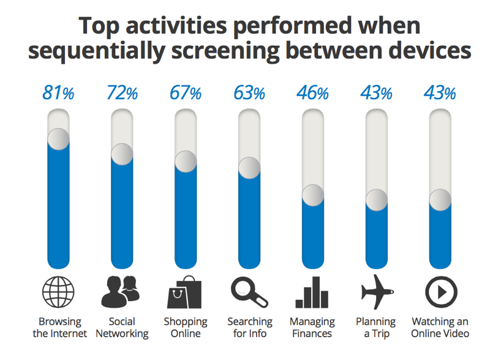
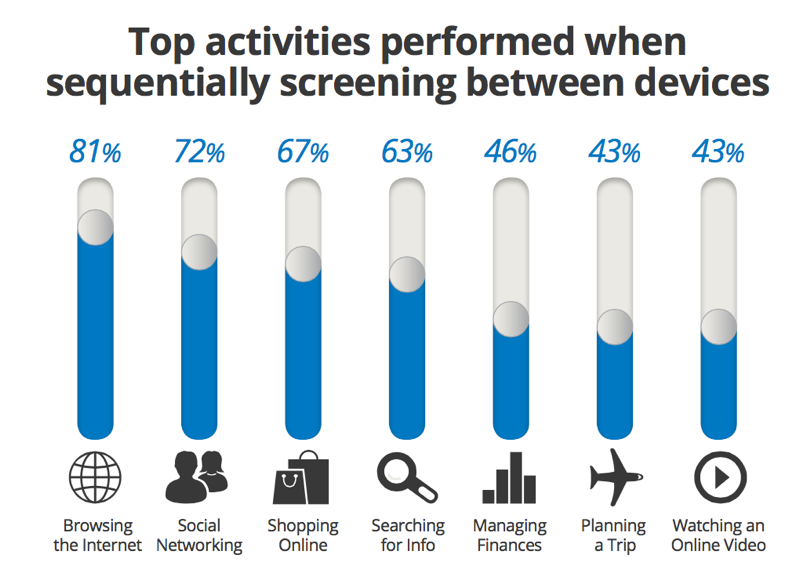
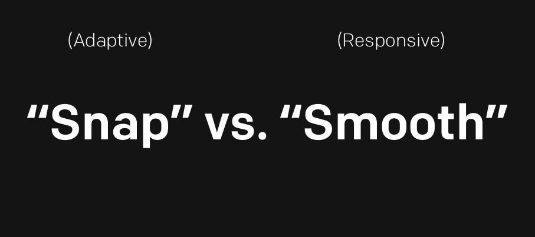

Rustbelt Refresh 2016
Responsive Design Workshop
With Karen McGrane and Ethan Marcotte
Presented by Feras Deiratany
What is Responsive Design?


Why Responsive Design?
Mobile Growth
 

Responsive Design Values
Thinking "Mobile First"
Flexibility in Design

Flexibility in Delivery
Images in RWD
img { max-width: 100%; }
Compressive Images
Rollout
Responsive Retrofit
Beta
Pick A Page
Responsive is not a project. Responsive is a permanent new way of working.
—Scott Kelton Jones, Expedia